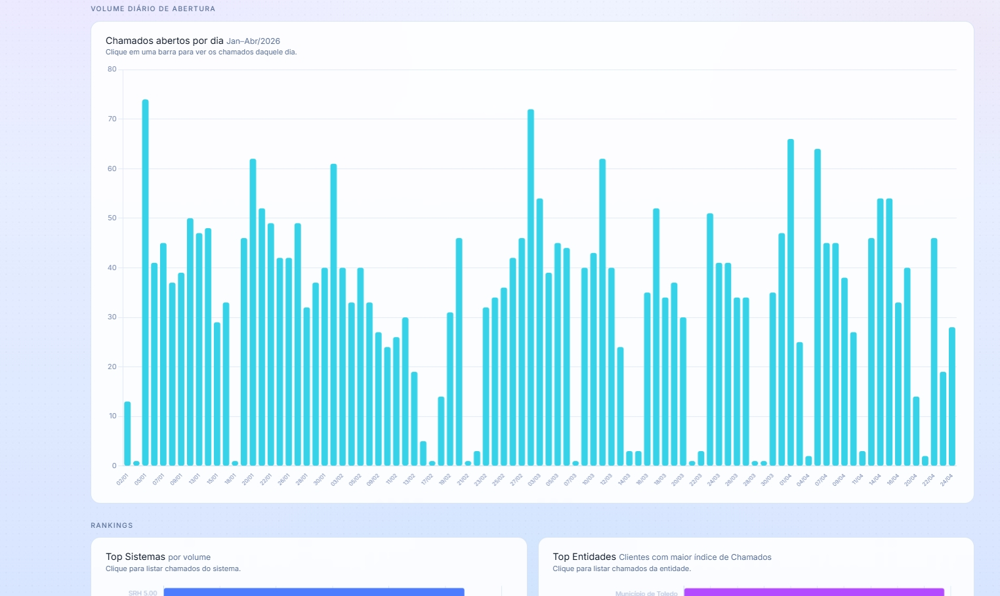
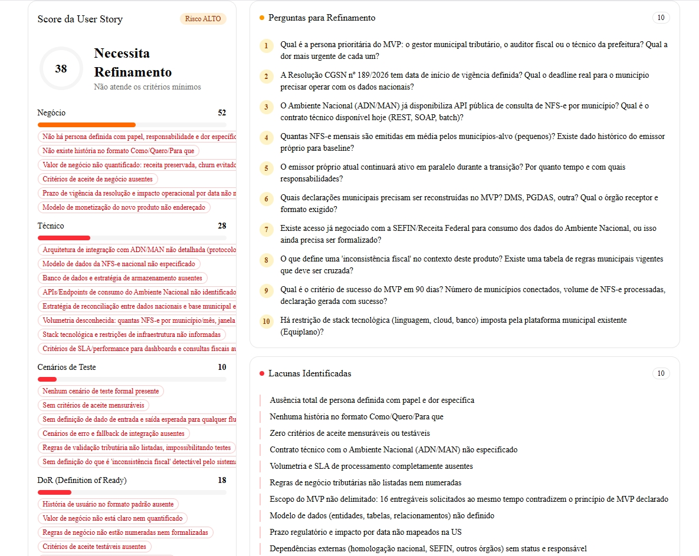
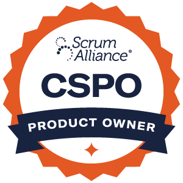
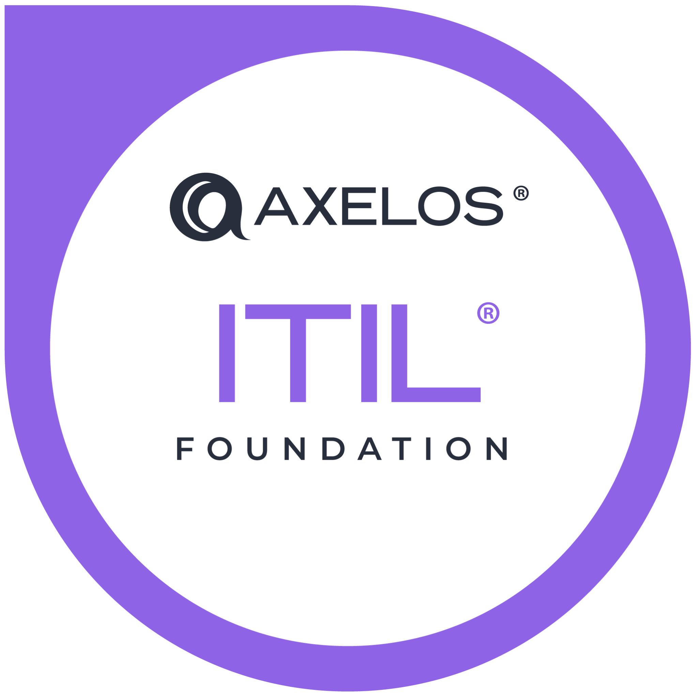
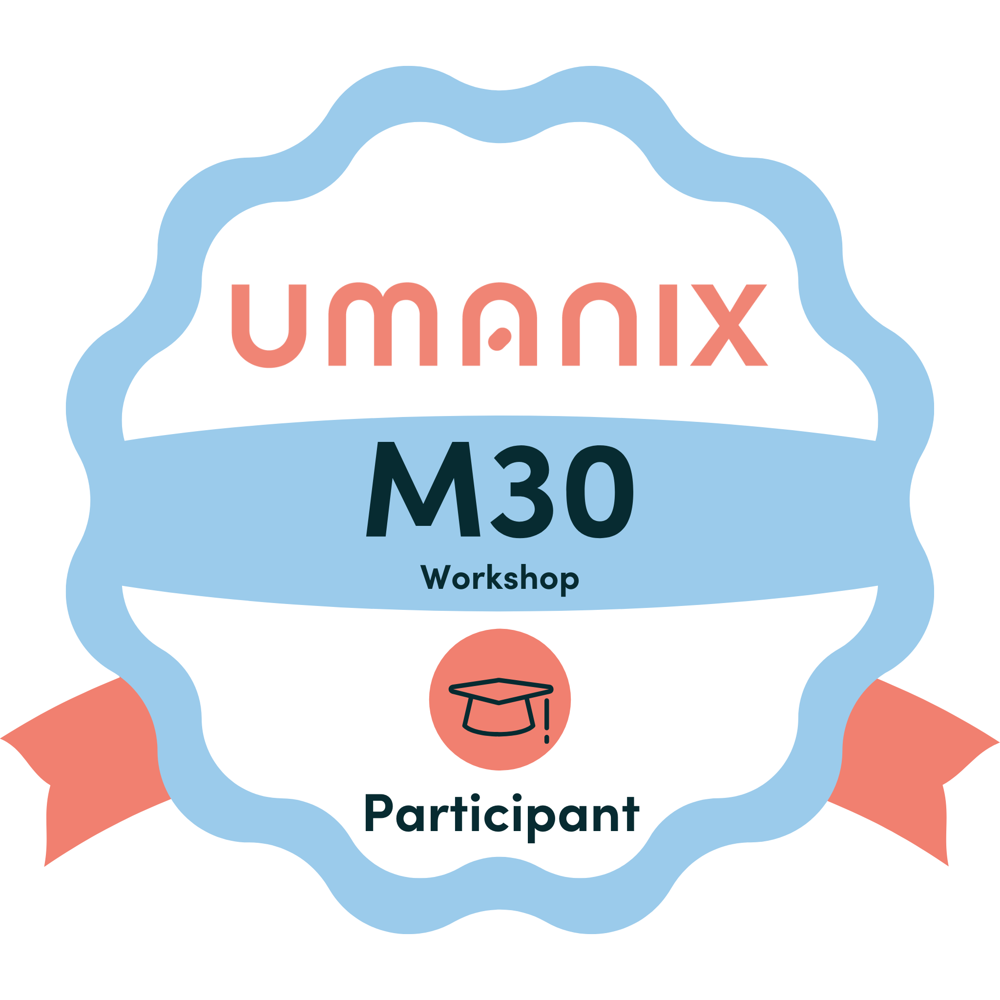
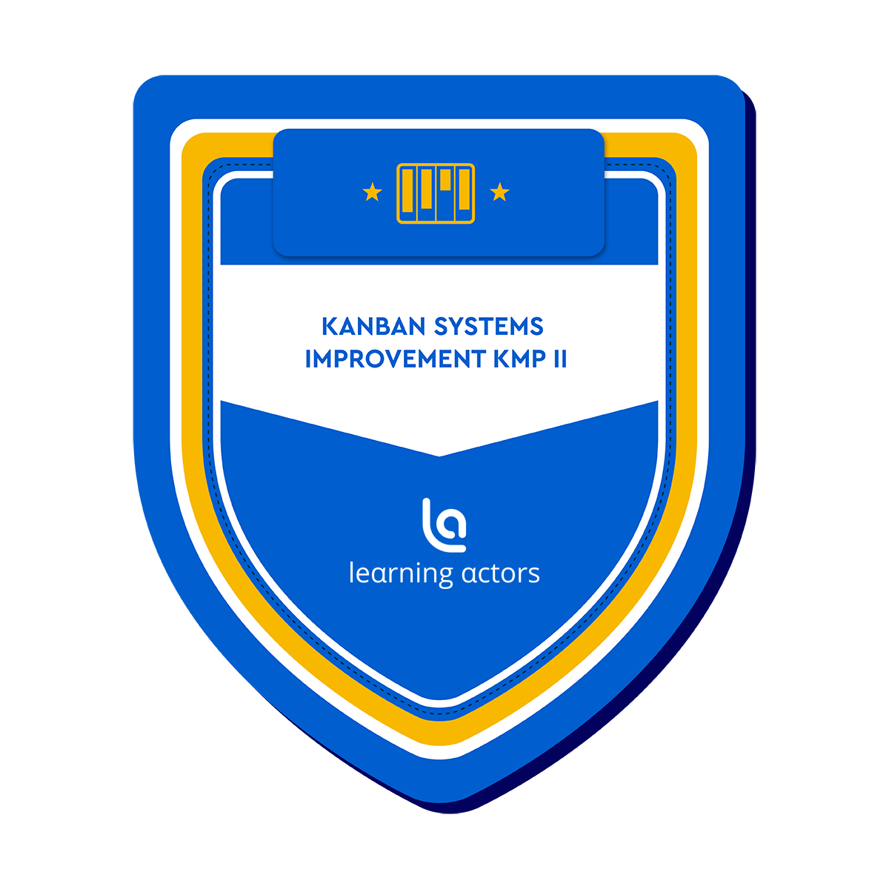

16 anos transformando caos em previsibilidade. De suporte N1 a Head de Produto e Inovação.
Profile {
Role: Head de Produto e Inovação
Experience: 16+ anos
Domains: ERP, Telecom, AgTech, GovTech
Teams: Squads multidisciplinares (dev, QA, ops)
Languages: PT (nativo), EN (C1), ES (B1)
}
Approach {
Discovery: Dual Track, dados antes de opinião
Metrics: Lead Time, Throughput, NPS, SLA
Stack: Grafana, Docker, MikroTik, Jira
DevOps: Estabilizar antes de escalar
}
Hoje lidero produto, inovação e times de desenvolvimento. Já conduzi squads multidisciplinares em ERP, telecom, agtech e govtech, sempre com foco em previsibilidade e resultado. Antes disso, passei por redes, infraestrutura, operações críticas e gestão de equipes. Comecei no suporte técnico, onde aprendi a ouvir sob pressão, resolver com pouco e entregar quando o cenário era contra.
Não sou um perfil de caixa única. Consigo conversar com o dev sobre arquitetura, com o diretor sobre roadmap e com a operação sobre SLA no mesmo dia. Produto, tecnologia, operação e negócio não são silos pra mim. São o mesmo problema visto de ângulos diferentes.
Entrego melhor quando o objetivo é claro e o time tem autonomia para executar. Gosto de ambientes onde a entrega gera impacto real, não só processo.
Liderei squads de desenvolvimento em um ERP que substituiu dois sistemas legados. Conduzi backlog estratégico com foco em previsibilidade. Downtime caiu para zero. Performance do time subiu 35%. Criei bots que passaram a resolver 70% dos chamados sozinhos. A atuação foi de operacional para liderança de portfólio, com influência direta em decisões executivas e alinhamento entre produto, tecnologia e operação.
Reestruturei o principal produto da empresa em 6 meses, recuperando confiança da diretoria. Implantei monitoramento com IA para armazéns: falhas não detectadas caíram 65%. Criei matriz de criticidade que reduziu tempo de resposta em 40%. Eliminei retorno físico de equipamentos com solução remota. Assumi DevOps: estabilizei ambientes, revisei infraestrutura, recuperei confiabilidade. Interface direta com cofundadores.
De analista N1 a líder de 18 pessoas, com três promoções no caminho. Otimizei roteirização e saldo: de R$100 mil/mês para R$20 mil (economia de R$80K/mês). Reduzi escalonamentos em 40% alinhando times operacionais e técnicos. Criei manuais e fluxos que viraram padrão interno.
Gestão de times operacionais com foco em padronização e entrega contínua. Treinamentos estruturados reduziram erros em 30%. Relatórios estratégicos usados pela diretoria para tomada de decisão.

Quando a operação cresce, o volume de protocolos vira ruído. Este projeto nasceu para transformar esse ruído em informação. Cruza dados de abertura diária, identifica onde a operação trava, quais sistemas acumulam mais demanda e quais entidades geram mais retorno. SLA em tempo real, ranking por volume e visão clara de gargalos. O objetivo é simples: ninguém decide no escuro.

A maioria das histórias que geram retrabalho não falham na esteira. Falham antes, no refinamento. Este motor de análise avalia cada User Story em quatro dimensões: negócio, técnica, cenários de teste e Definition of Ready. Gera uma nota de maturidade, aponta lacunas e sugere perguntas que o time deveria ter feito. Resultado: histórias mal escritas não entram na sprint.

CSPO Scrum Alliance
ITIL 4 PeopleCert
Management 3.0 Management 3.0
KMP II Kanban UniversityNada de achismos. Só estratégia, agilidade e entrega com propósito.
evertonrei@gmail.com